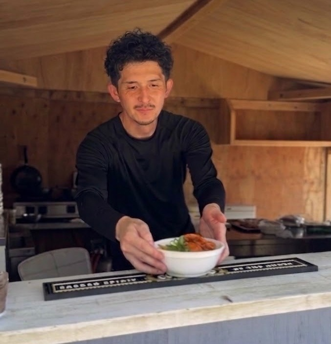
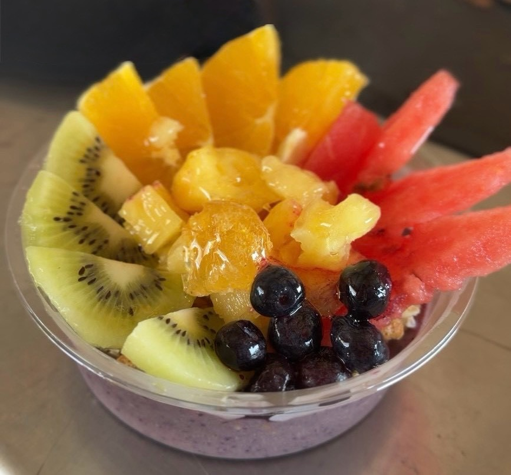

ABOUT
海を、もっと近くに。
島時間を、もっと自由に。
目の前に広がる青い海。白い砂浜。ゆっくり流れる時間。GoGoUmi paradiseは、興居島の海を思いきり楽しむための海の家です。
BEACHBeach BBQISLAND
TIMESUNSETPET OK
「今日は、島に行こう。」
そんな気軽さで。
海で遊んで、食べて、飲んで、笑って。大切な人や愛犬と過ごす一日を、ちょっと特別な思い出に。
THE BEACH
ここにしかない、
海の景色。
青い海と白い砂浜。昼の開放感から、夕暮れの静けさまで。一日を通して表情を変える海が待っています。


Beach BBQ
海を眺めながら、
みんなでBBQ。
青空の下、砂浜のそばで楽しむBBQ。肉と野菜を囲んで、いつもの食事を「島の一日」に。

FOODお肉・野菜
SCENE海辺のBBQ
SPACE海の家
TIME島でゆっくり


SECOND RECOMMEND
BBQのあとは、
ひんやりアサイーボウル。
海でたっぷり遊んだあとに、ちょっとひと休み。フルーツをたっぷりのせたアサイーボウルを、海辺で楽しめます。
ACAI BOWLFRESH FRUITSBEACH TIME
「海 × BBQ × アサイー」
夏の島時間を、もうひとつ贅沢に。
BBQがGoGoUmiの目玉なら、アサイーボウルは「もう一つのお楽しみ」。ランチのあとや海遊びの休憩にもぴったりです。

SUNSET TIME
太陽が沈むころまで、
もう少しだけ。
ACCESS
松山から、
ちょっと島へ。
GoGoUmi paradiseは愛媛県松山市の興居島にあります。
思ったよりずっと近い、船旅のスタートです。
高浜港からフェリーでたった約10〜15分！
1
松山市内
車または伊予鉄で高浜駅・高浜港へ
2
高浜港
フェリー乗り場へ（車ごと乗船もOK）
3
フェリー乗船
由良港 or 泊港へ
約10〜15分
4
興居島到着！
GoGoUmi paradiseで最高の一日を
GoGoUmi paradise
興居島海の家 海の虜
住所
〒791-8093 愛媛県松山市泊町 鷲ヶ巣海水浴場
営業時間
11:00〜(フード/L.O.16:00) ※予約制
お問い合わせ・ご予約
現地担当（池田）：080-4999-0246
フェリー時刻表
ごごしまフェリー時刻表 ↗
FAQ
よくある質問
初めての方でも安心。気になるポイントをまとめました。
はい、事前のご予約をお願いしております。空き状況の確認・ご予約はInstagram DM、またはお電話（080-4999-0246）からお問い合わせください。
天候状況により営業を見合わせる場合がございます。当日の営業状況はInstagramのストーリーズでご確認ください。
はい！BBQプランには機材・食材がセットになっています。お気軽に手ぶらでお越しください。水着やタオルなどはお持ちいただくことをおすすめします。
もちろんです！ファミリーでのご利用も大歓迎です。砂浜での海遊びやBBQを、お子様と一緒にお楽しみいただけます。
はい、ペット同伴でのご来場も大歓迎です！海辺のお散歩やBBQを愛犬と一緒にお楽しみいただけます。他のお客様へのご配慮のため、リードの着用をお願いしております。
はい、海の家の近くに駐車場がございます。お車でお越しの際もご安心ください。
はい、当施設をご利用のお客様（小学生以上）には、お一人様につき「1ドリンク＋1フード」のファーストオーダーをお願いしております（※BBQセットをご注文のお客様は「1ドリンク」のファーストオーダーをお願いしております）。貸卓利用料に加え、手ぶらBBQセットやカフェ・フードメニュー（ラーメン・カレー・うどん・アサイーボウル等）からお好きな組み合わせをご注文いただけます。
はい、少人数から団体様まで施設貸切や、ビーチイベント（ヨガ・音楽・撮影・ワークショップ・オフ会等）の開催を大歓迎しております。日程、ご予算、特別メニューのご要望など、お気軽にInstagram DMまたはお電話（080-4999-0246）にてご相談ください。
SEE YOU AT THE BEACH
この夏は、興居島へ。
海で遊ぶ。BBQをする。何もしない。どんな過ごし方も、きっといい。